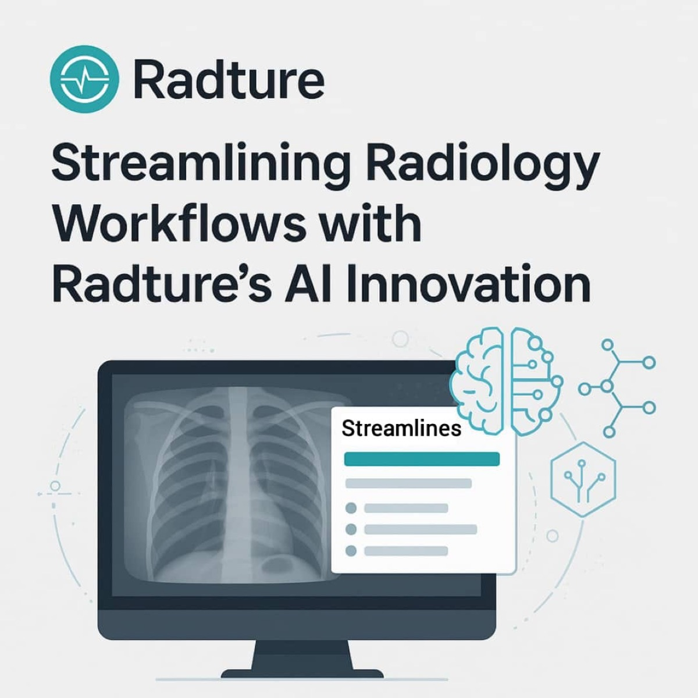

Blog
Notes on imaging, workflow and care.
Articles from the Ultradeck Labs team on radiology, connected care and the thinking behind Radture.
Latest
Recent articles
Published on Medium by Ultradeck Labs.

Streamlining Radiology Workflows: How Radture is Helping Radiologists Breathe Again
It was just another Monday morning, and I was already behind. The first case on my list was a chest CT from my hospital. I opened the PACS. The study wasn’t there…
Continue on MediumPreventive Healthcare: The Key to a Long and Healthy Life
In today’s fast-paced world, many people seek medical care only when they experience symptoms. Preventive healthcare focuses on maintaining wellness and avoiding illnesses before they develop.
Continue on MediumThe Role of Radiology in Modern Medicine: Diagnosis, Treatment, and Beyond
Radiology is a cornerstone of modern medicine, crucial in diagnosing and treating various conditions. It employs imaging technologies such as X-rays, MRI, CT scans and ultrasound.
Continue on MediumImpression
Choose Radture for connected imaging workflows.
From in-house reporting to cross-facility referrals, Radture provides a shared imaging workflow backbone that connects hospitals, diagnostic centers and specialists — reducing delays, removing manual handoffs, and enabling faster, more coordinated care.